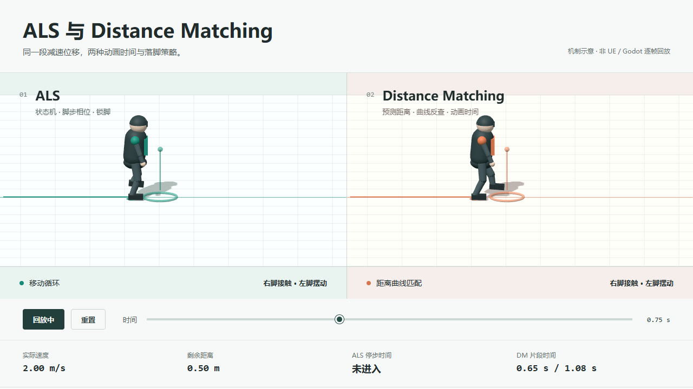

ALS 停步与 Distance Matching：脚步相位和距离曲线
同一条减速轨迹，ALS 根据状态与支撑脚选择停步；Distance Matching 根据剩余距离选动画时间。结合三维录屏与可交互演示，看看两种方案如何处理滑步。
阅读全文 →Notes / Animation
记录动画系统、客户端工程与工具链实践。

同一条减速轨迹，ALS 根据状态与支撑脚选择停步；Distance Matching 根据剩余距离选动画时间。结合三维录屏与可交互演示，看看两种方案如何处理滑步。
阅读全文 →